| 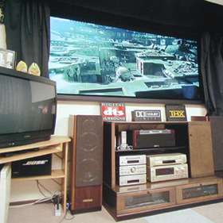 |
「一点豪華」と唄って、HPを立ち上げてから4年。
機器は、ハイエンドとは相変わらず無縁だが、一部入れ替わった。
（下の画像は、雑誌掲載時のもの） |
|
|
| 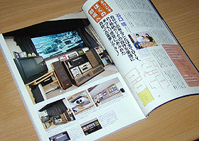 |
|
 |
|
| DVDプレーヤー・・・DDENON DVD-2800 |
当方としては通算5台目のDVDプレーヤー
今となっては当たり前のプログレッシブ。
何と！「ホームシアターファイル」の懸賞でゲット！！ |
AVアンプ・・・SONY STR-V939X
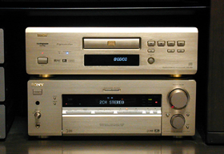 |
dtsデコーダ内蔵だが、アバックの特売で購入から2年あまり。
視聴は深夜バーチャルヘッドホン多用のため、 これで十分！ |
|
|
液晶PJ・・・・SONY VW10HT
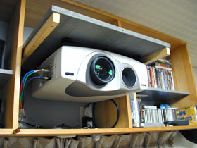 |
自分にとって通算5台目の液晶プロジェクターにして行き着いた、納得の一点。
今でも十分現役で使えると思う。・・・・・・が、
黒の締まりと、PAN（横のスライド映像）は何ともし難い。
さらに、天気が悪い日はこんなことに.... |
|
|
ビーズスクリーン・・・・キクチSBSR-190PROG
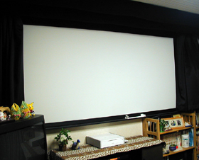 |
自作パネル張り込み式ワイド110インチ
120インチの生地を購入して、休日の勤務先で製作。
車の屋根に積んで持ち帰りました。 |
|
|
| S-VHS・・・・・Panasonic NV-SX10 |
自分ではビデオは滅多に録画しない。子供のアニメ専用になっている。
PSX導入によりいよいよお蔵入りか・・・？ |
|
|
| ベータ・・・・・SL-HF900(ベータプロ1号機？) |
ハイ・バンドベータを売り物に当時定価28万近くしていた。
ここ10年は、はっきりいって眠っている。
昔撮ったテープを見るために保管しているだけ。 |
|
|
| 8mmデッキ・・・・・EV-S500 |
120分テープを使って6トラックに各4時間ずつ、
計24時間デジタル録音できるオーディオデッキ
にもなるそうだが、周波数特性が悪いためCDの録音には向かない。
ムービー編集用にと買ったが、デジタルムービーに移行したため
これまた昔撮ったテープを見るために・・・ |
|
|
HDD/DVDレコーダー・・・・・SONY PSX
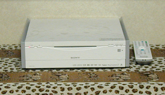 |
テレビデオの「ビデオ」部が故障したので、ついに購入。
故障さえしなければこれは、使えます！！
ゲームはやらないつもりが・・・・ |
|
|
フロントSP・・・・・BOSE 301ＭＭ
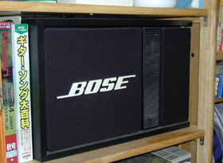 |
サイズを超えた重低音は、サブウーハーを必要としないほど。
特に女性ボーカルの表現がいい。防磁タイプでないため、
テレビ下にのセットに苦労する。 |
|
|
センターSP・・・・SONYセレブリティ1号
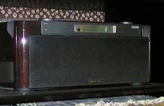 |
センター出力をスルーして、ライン入力でセンターSPとして使っています。
『こんな使い方もったいない.....』と叱られそう。
深い厚みのある音声が得られます。
（ちなみにセレブリティは0号機と2号機、BOSE AW-1もコレクションにあります。） |
|
|
リアSP・・・・BOSE 101MM
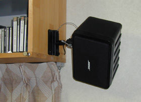 |
手頃な価格と重さでこれになりました。 |
|
|
TVモニター・・・・
三菱のとある36型非平面ブラウン管式
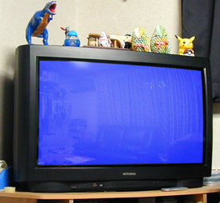 |
場所ばかり取る。
映り込み激しい。
でも画像はキレイ。
中古5万円なら、納得！ |
|
|
バーチャルヘッドホン・・・・・SONY MDR-DS5000
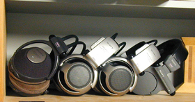 |
5.1chが疑似的に再生できるので、
深夜の視聴が多い自分にかかせない。
レシーバー部は、家族分4台を確保。 |